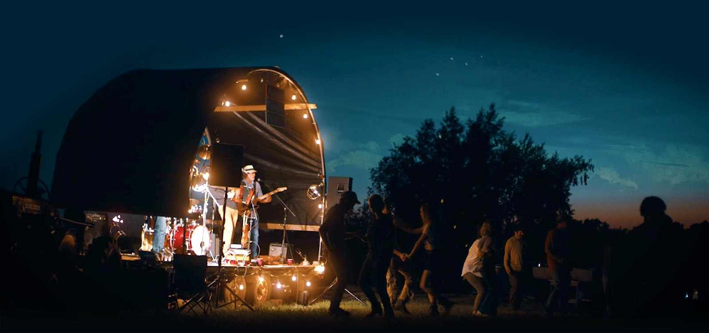
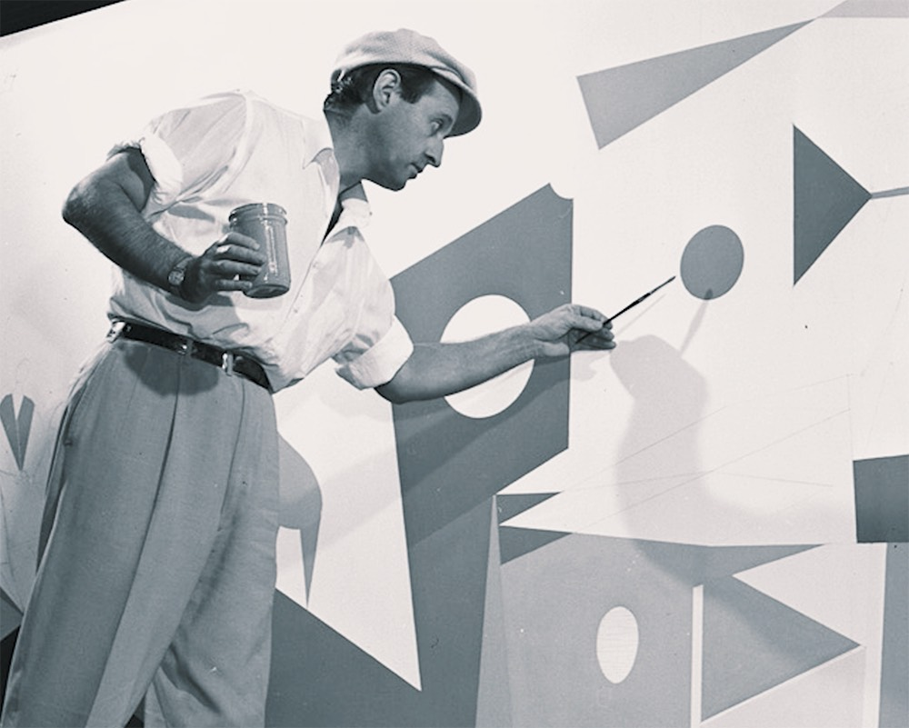
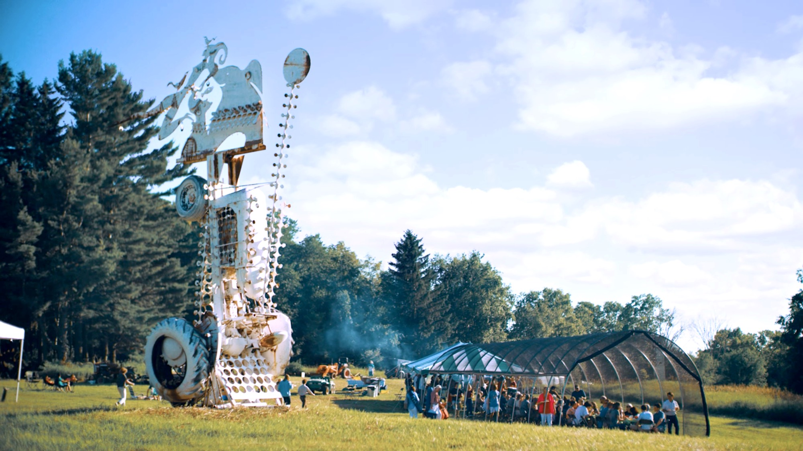

The funnest music festival on a pasture-based farm in Green Lake, Wisconsin.
Twenty artists, five farm-fresh meals, and camping in the hills.
Just three hours from Chicago or 10 minutes from downtown Green Lake.
Featuring Andrew Sa, Case Oats (DJ set), Dusk, Elizabeth Moen, Lake James, Chromabeats, Max Subar, Raven Wright, Sammy Tweedy, Sima Cunningham, Wyatt Waddell, and more to be announced.
When: August 12-14, 2022, 3PM until noon Sunday.
Where: W0908 Scott Hill Road, Ripon, Wisconsin.
Tickets Include:
All ingredients are grown at Avrom Farm or sourced from other local farmers.
Camp sites have easy access to drinking water, portable restrooms, handwashing stations, and first aid. There are two camping areas; one area is reserved for families and folks who would like quieter time at night. Please bring your own tent and whatever other supplies you prefer for comfort. Festival parking is walking distance from camp sites, so please plan to walk your supplies from your vehicle to your camp site. Reach out to us with any questions you may have!
Local craft beer and wine sold separately.
Our safety policy will follow CDC guidelines.
If you have any questions, please email us.
Sorry, no dogs allowed.
No outside beverages allowed.
Thank you for understanding.
Total: $
In the early fifties, renowned artist Lester Schwartz established Avrom Farm in Green Lake, Wisconsin.
The farm was his workshop for towering sculptures and cutting-edge paintings.
Today it’s a pasture-based farm run by Lester’s grandson Hayden Holbert, responsibly growing delicious food.
And Avrom Farm Party is our celebration of regenerative farming, music, and community.